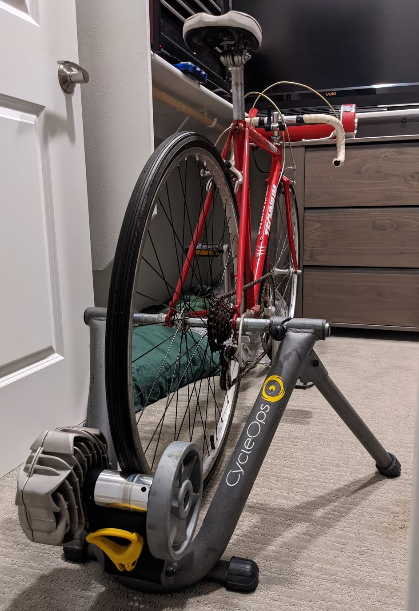
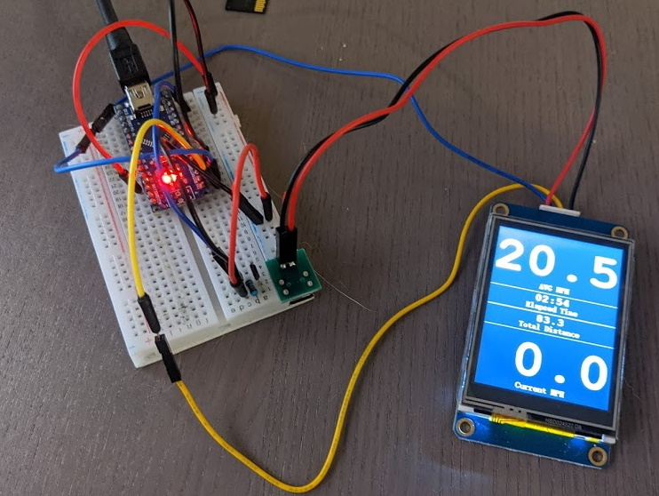

HOME RESUME/CONTACT GITHUB
[09-01-2021] | Arduino Bike Computer
To keep up with the spandex boys at work, I needed to keep my cycling strength up over the winter. Instead of blowing $1,000+ on a smart trainer and everything for Zwift I went went as cheap as possible. The setup is:
|
 |
Strain gauges for cranks are prohibitively expensive, and due to the resistance trainer I have applying a constant force, I can use average speed over the ride as a pretty good gauge of performance. Instead of just pedaling for 20-30 minutes, I have a goal to beat each time now.
Putting it all together
List of items required
- Arduino Nano
- Nextion NX3224T024
- 3.5mm jack headset extension cable (cable muse have 3 black rings on pin end)
- USB battery (I used an Aukey 5000mAh)
- Jumper wires and speaker wire, or any other kind of similar wire
- Pulldown resistor for hall effect sensor
- Magnet for bike spoke
- Hall effect sensor

Wiring it all up
First things first - measure the distance from where you want to mount the computer to where you'll place the sensor (likely on the chainstay near the outside of the wheel) and keep this in mind as you measure out the length for the sensor end of the wires.
- Arduino wires
- VIN to Nextion power supply positive
- 5V to split - 3.5mm jack socket end red wire and Nextion +
- GND to split - 3.5mm jack socket end white wire and Nextion -
- GND to Nextion power supply negative (2 wires in same GND on my build)
- TX to yellow Nextion
- RX to blue Nextion
- D2 to 3.5mm jack socket end yellow wire
- Sensor side of 3.5mm jack (pin end)
- Left most pin to split - 3.5mm jack pin end red wire (5V) and pulldown resistor
- Middle pin to 3.5mm jack pin end yellow wire
- Right most pin to split - 3.5mm jack pin end and white wire (GND) and pulldown resistor

Loading the Arduino:
- Download the Nextion.H library, see "troubleshooting" below if using Arduino with only 1 serial
- Place library in necessary location
- Load the .tft file from the Nextion Screen file onto an SD card (NO OTHER FILES ON SD CARD)
- Power off Nextion, insert SD card, wait for load, power off, remove SD card
- Open the code from Arduino Code/ArduinoBikeComputer folder
- Compile the code and upload to Arduino
Printing the case:
Not much to say here - print the case out on a 3d printer or use a web store to get it done. It takes a bit to cram all the wires in there, but you can put some superglue or other around the edges to get it all to stay together. The brackets on the bottom of the extruded cylinder are used to tywrap the case to handlebars.
Troubleshooting
I used an Arduino Nano for this. The Nextion.h library is set up to use an Arduino with multiple serial ports by default. First build of my code I got this -
In file included from C:\Program Files (x86)\Arduino\libraries\ITEADLIB_Arduino_Nextion-master\NexHardware.h:18:0,
from C:\Program Files (x86)\Arduino\libraries\ITEADLIB_Arduino_Nextion-master\NexHardware.cpp:15:
C:\Program Files (x86)\Arduino\libraries\ITEADLIB_Arduino_Nextion-master\NexHardware.cpp: In function 'bool recvRetNumber(uint32_t*, uint32_t)':
C:\Program Files (x86)\Arduino\libraries\ITEADLIB_Arduino_Nextion-master\NexConfig.h:37:19: error: 'Serial2' was not declared in this scope
#define nexSerial Serial2
^
C:\Program Files (x86)\Arduino\libraries\ITEADLIB_Arduino_Nextion-master\NexHardware.cpp:55:5: note: in expansion of macro 'nexSerial'
nexSerial.setTimeout(timeout);
^~~~~~~~~
Things learned in the process/final notes
I actually started all this using a SSD1306 TFT display. I tried multiple different libraries and rewrote my code a few times, but updating the screen took so much of the Arduino's processing power that the main loop slowed down to the point where the hall effect sensor wouldn't register the magnet on a rotation of the wheel. It went from 100+hz to about 4hz. The SSD1306 also required something like 8 wires and 6 resistors.
The Nextion display has a built in processor for the screen, so it only needs power and 2 data lines, which makes packaging much easier. The built in processor for video processing means instructions are just passed over the RX/TX lines, rather than requiring the Arduino to use its own processing power to draw every frame. The editor is also incredibly easy to use, and updating the screen with a Micro SD card is a dead simple process.
I think I spent $7 extra on this Nextion as compared to the SSD1306. I read elsewhere that TJC panels are the same as Nextion, and can be found for around half price on AliExpress. I'll probably go that route next time.
I found the main code for the timer and added my functionality on top. I originally tried using the main loop to measure everything, but as I added more features to the code, it slowed down and would only read millis() at like 3hz, so the magnet could pass by the sensor without being read among other issues.
The basic part of the code is to read the time between when the magnet passes by the hall effect sensor. Each other piece of functionality (avg mph, mph, distance) is all built on top of that. I also rely on millis() to do hour/minute/second readout. I don't necessarily need the precision of an RTC.